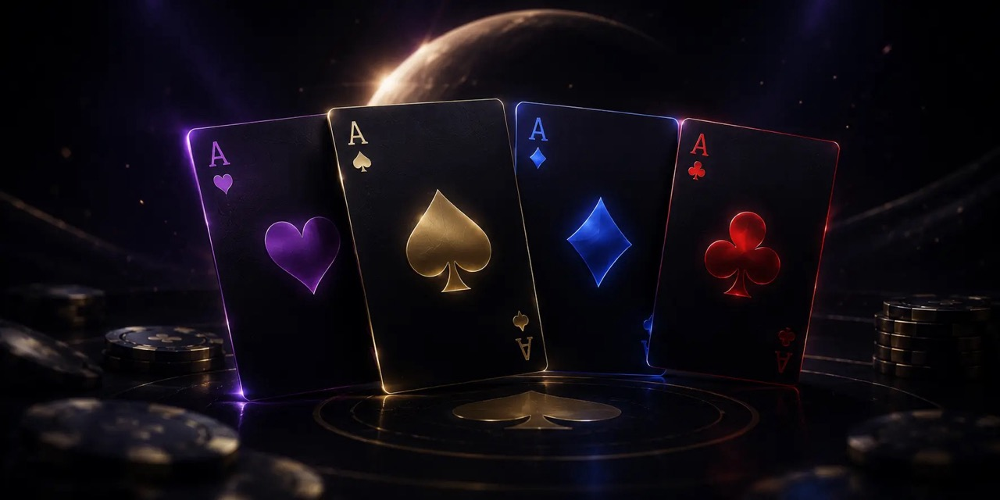
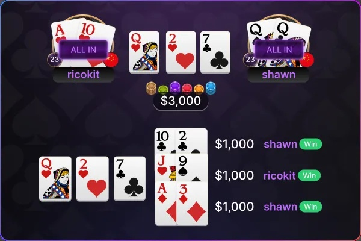
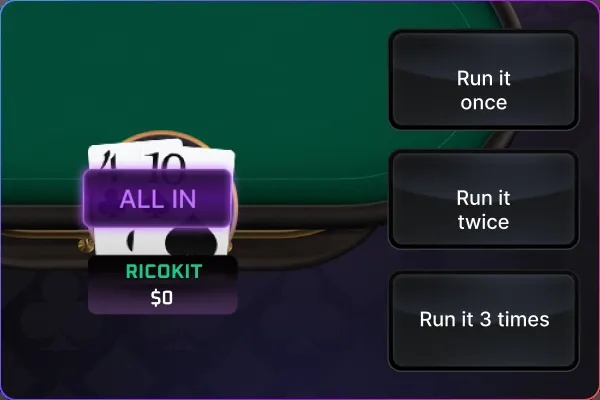

多組牌
All-in 後，降低運氣波動
一次 All-in多次決勝負
多組牌（Run It Multiple Times）功能可在最後兩位玩家 All-in 後，經雙方同意開啟，將剩餘公共牌分多次發出。
每組牌獨立計算勝負與底池分配，有效降低單次運氣波動，讓牌局結果更貼近期望值（EV）。

功能介紹

當只有兩位玩家在河牌之前 All-in 後，可以協議多次發牌：
協議確認後，底池會照協議發牌的次數拆分，依照協議次數發出剩餘公共牌，每贏一次即獲得一份。
可選選項

Run It Once
• 牌組: 正常流程
• 比牌方式: 剩餘未發出的公共牌只發1次
• 底池分配: 贏家獲得全部底池
Run It Twice
• 牌組: 剩餘未發出的公共牌發2次
• 比牌方式: 共比2次
• 底池分配: 每次勝者獲得1/2底池
Run It 3 Times
• 牌組: 剩餘未發出的公共牌發3次
• 比牌方式: 比3次
• 底池分配: 每次勝者獲得 1/3 底池